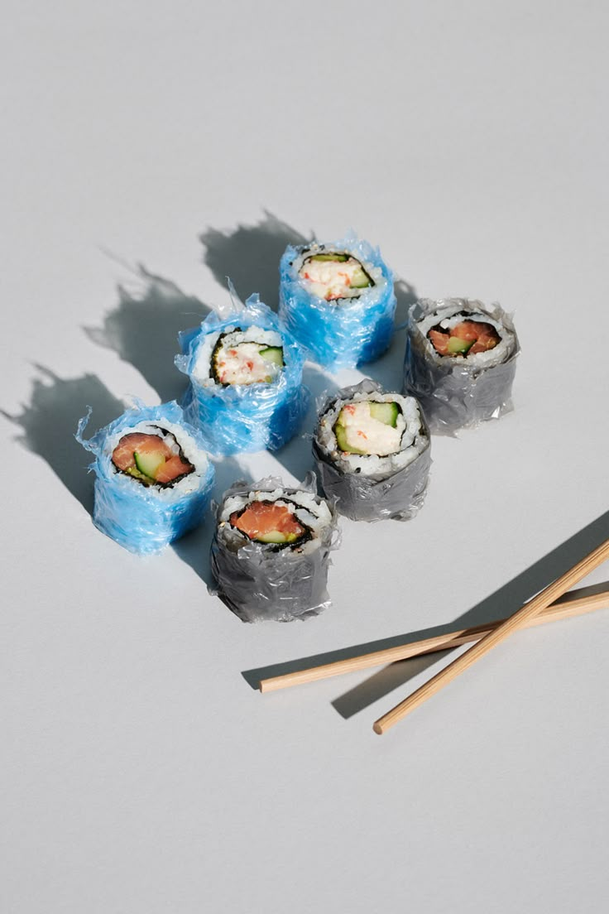

Microplásticos
Los microplásticos son pequeñas partículas de plástico que afectan la vida marina y la salud humana.
Provienen de diversas fuentes, representando un peligro constante.
La contaminacion del ambiente es la introduccion de sustancias o agentes contaminantes en el medio ambiente, que pueden causar efectos negativos en la salud humana, la fauna y la flora. Estos contaminantes pueden ser de origen natural o humano y pueden afectar el aire, el agua y el suelo. La contaminacion del ambiente es un problema global que afecta a todos los seres vivos, aunque de todos estos contaminantes, el mas conocido y elaborado en masa a pesar de que se sabe bien los daños que causa, es el plastico. Este material se ha convertido en un problema ambiental significativo debido a su durabilidad y resistencia a la degradacion.

Se estima que cada año se producen millones de toneladas de plastico, y una gran parte de este termina en los oceanos y en la tierra, donde puede tardar cientos de años en descomponerse. La contaminacion por plastico tiene graves consecuencias para la vida marina, la fauna terrestre y la salud humana. Los animales pueden ingerir plastico o quedar atrapados en el, lo que puede causarles lesiones o la muerte. Ademas, los microplasticos, que son pequeñas particulas de plastico, pueden entrar en la cadena alimentaria y afectar la salud de los seres humanos. La contaminacion del ambiente es un problema complejo que requiere la colaboracion de gobiernos, empresas y ciudadanos para encontrar soluciones efectivas.